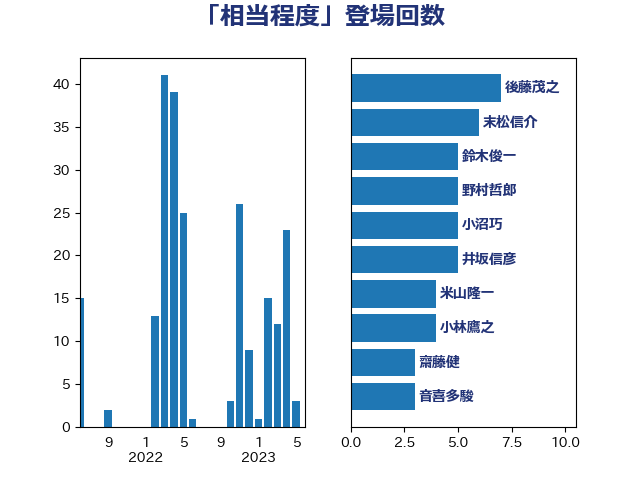

単語「相当程度」

| 後藤茂之 | 自由民主党 | 7 回 |
| 末松信介 | 自由民主党 | 6 回 |
| 鈴木俊一 | 自由民主党 | 5 回 |
| 野村哲郎 | 自由民主党 | 5 回 |
| 小沼巧 | 立憲民主党 | 5 回 |
| 井坂信彦 | 立憲民主党 | 5 回 |
| 米山隆一 | 立憲民主党 | 4 回 |
| 小林鷹之 | 自由民主党 | 4 回 |
| 齋藤健 | 自由民主党 | 3 回 |
| 音喜多駿 | 日本維新の会 | 3 回 |
| 西村康稔 | 自由民主党 | 3 回 |
| 加藤勝信 | 自由民主党 | 3 回 |
| 鰐淵洋子 | 公明党 | 2 回 |
| 高橋千鶴子 | 日本共産党 | 2 回 |
| 門山宏哲 | 自由民主党 | 2 回 |
| 鈴木庸介 | 立憲民主党 | 2 回 |
| 葉梨康弘 | 自由民主党 | 2 回 |
| 義家弘介 | 自由民主党 | 2 回 |
| 竹詰仁 | 国民民主党 | 2 回 |
| 河野太郎 | 自由民主党 | 2 回 |
| 沢田良 | 日本維新の会 | 2 回 |
| 水野素子 | 立憲民主党 | 2 回 |
| 斉藤鉄夫 | 公明党 | 2 回 |
| 山下貴司 | 自由民主党 | 2 回 |
| 小川淳也 | 立憲民主党 | 2 回 |
| 大串博志 | 立憲民主党 | 2 回 |
| 吉良よし子 | 日本共産党 | 2 回 |
| 一谷勇一郎 | 日本維新の会 | 2 回 |
| 鳩山二郎 | 自由民主党 | 1 回 |
| 馬淵澄夫 | 立憲民主党 | 1 回 |
| 鈴木敦 | 国民民主党 | 1 回 |
| 近藤和也 | 立憲民主党 | 1 回 |
| 赤羽一嘉 | 公明党 | 1 回 |
| 藤岡隆雄 | 立憲民主党 | 1 回 |
| 緑川貴士 | 立憲民主党 | 1 回 |
| 稲津久 | 公明党 | 1 回 |
| 神谷裕 | 立憲民主党 | 1 回 |
| 礒崎哲史 | 国民民主党 | 1 回 |
| 石原正敬 | 自由民主党 | 1 回 |
| 牧山ひろえ | 立憲民主党 | 1 回 |
| 枝野幸男 | 立憲民主党 | 1 回 |
| 林芳正 | 自由民主党 | 1 回 |
| 杉尾秀哉 | 立憲民主党 | 1 回 |
| 早稲田ゆき | 立憲民主党 | 1 回 |
| 新藤義孝 | 自由民主党 | 1 回 |
| 斎藤洋明 | 自由民主党 | 1 回 |
| 平林晃 | 公明党 | 1 回 |
| 川田龍平 | 立憲民主党 | 1 回 |
| 岸真紀子 | 立憲民主党 | 1 回 |
| 山際大志郎 | 自由民主党 | 1 回 |
| 山添拓 | 日本共産党 | 1 回 |
| 尾崎正直 | 自由民主党 | 1 回 |
| 小里泰弘 | 自由民主党 | 1 回 |
| 小倉將信 | 自由民主党 | 1 回 |
| 寺田学 | 立憲民主党 | 1 回 |
| 宮路拓馬 | 自由民主党 | 1 回 |
| 宮崎政久 | 自由民主党 | 1 回 |
| 安江伸夫 | 公明党 | 1 回 |
| 坂本祐之輔 | 立憲民主党 | 1 回 |
| 吉田統彦 | 立憲民主党 | 1 回 |
| 吉川元 | 立憲民主党 | 1 回 |
| 古川禎久 | 自由民主党 | 1 回 |
| 勝俣孝明 | 自由民主党 | 1 回 |
| 務台俊介 | 自由民主党 | 1 回 |
| 加藤鮎子 | 自由民主党 | 1 回 |
| 前原誠司 | 国民民主党 | 1 回 |
| 倉林明子 | 日本共産党 | 1 回 |
| 中野洋昌 | 公明党 | 1 回 |
| 中田宏 | 自由民主党 | 1 回 |
| 上野通子 | 自由民主党 | 1 回 |
| 上杉謙太郎 | 自由民主党 | 1 回 |
| 三木圭恵 | 日本維新の会 | 1 回 |